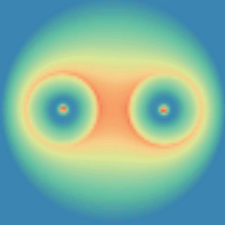
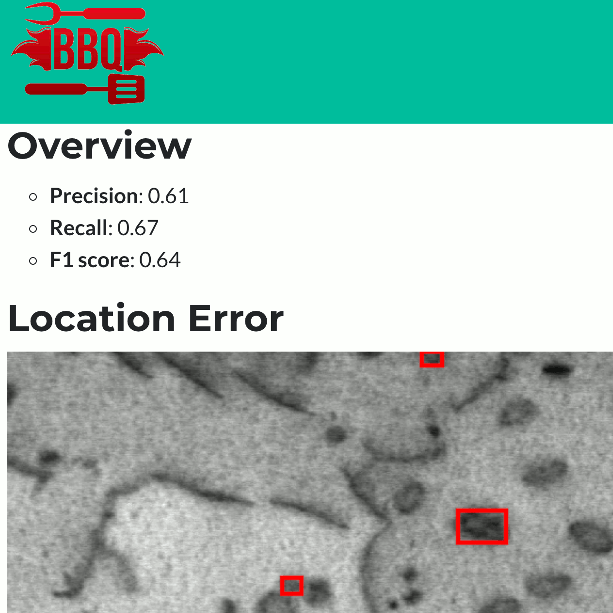

|
Current Research
I'm interested in computer vision, machine learning, image processing, virtual reality, and computational material and biology. Much of my research is about applying newly developed computational methods and models for the physical world including DNA, TEM images etc.
|
|
Automated Defect Recognition in Electron Microscopy Images
Minren Shen, 2018
Advisor: Prof. Dane Morgan, Department of Materials Science and Engineering, UW-Madison
I build an automated image analysis system for identifying dislocation loops in irradiated steels. Faster R-CNN module in ChainerCV is used to identify material defects in Electron Microscopy Images. The new system can detect TEM images faster and more stable compared to human level experts.
|
|
GAN for Super Resolution Simulated STEM Images
Minren Shen,Ruiqi Yin, Nick Lawrence, Cloris Feng, 2018
Advisor: Prof. Dane Morgan, Department of Materials Science and Engineering, UW-Madison
I develop a Generative Adversarial Networks ( GAN ) model( Pix2Pix ) to convert lower resolution but fast generate
simulated STEM images(Convention STEM Simulation) to the higher resolution but slower generated images( Multi-slice STEM Simulation). The relative error is reduced from 10% to 1%. GAN model not only improves the mean square error of generated images but also preserves all physical
meanings of the STEM images
|
|
Identifying Active Extravasation on Arteriograms with Deep Learning
Minren Shen, 2018
Advisor: Prof. Dane Morgan, Prof. Po-Ling Loh, Prof. Varun Jog, MD. Mark Kleedehn, UW-Madison
A two-stage method was used to solve the extravasation detection problem, where the first stage was used to classify whether a bleed was present and the second stage where an object detector was trained to identify the site of bleeding. ResNet-152 was used as the first stage classifier and Faster R-CNN was used as the second stage object detector. The first stage of the algorithm was 86% accuracy. The second stage of the algorithm correctly identified 5 of the 10 sites of bleeding.
The results are submitted to a radiologist conference(CIRSE2019).
|
|
Assessing Graph‐based Deep Learning Models for Predicting Flash Point
Xiaoyu Sun, Nathaniel J. Krakauer, Alexander Politowicz, Wei‐Ting Chen, Qiying Li, Zuoyi Li, Xianjia Shao, Alfred Sunaryo, Mingren Shen, James Wang, Dane Morgan, 2020
Flash points of organic molecules play an important role in preventing flammability hazards and large databases of measured values exist, although millions of compounds remain unmeasured. To rapidly extend existing data to new compounds many researchers have used quantitative structure‐property relationship (QSPR) analysis to effectively predict flash points. In recent years graph‐based deep learning (GBDL) has emerged as a powerful alternative method to traditional QSPR. In this paper, GBDL models were implemented in predicting flash point for the first time. We assessed the performance of two GBDL models, message‐passing neural network (MPNN) and graph convolutional neural network (GCNN), by comparing against 12 previous QSPR studies using more traditional methods. Our result shows that MPNN both outperforms GCNN and yields slightly worse but comparable performance with previous QSPR studies. The average R^2 and Mean Absolute Error (MAE) scores of MPNN are, respectively, 2.3 % lower and 2.0 K higher than previous comparable studies. To further explore GBDL models, we collected the largest flash point dataset to date, which contains 10575 unique molecules. The optimized MPNN gives a test data R^2 of 0.803 and MAE of 17.8 K on the complete dataset. We also extracted 5 datasets from our integrated dataset based on molecular types (acids, organometallics, organogermaniums, organosilicons, and organotins) and explore the quality of the model in these classes.
Paper Link
|
|
Harmonization and Targeted Feature Dropout for Generalized Segmentation: Application to Multi-site Traumatic Brain Injury Images
Yilin Liu, Gregory R. Kirk, Brendon M. Nacewicz, Martin A. Styner, Mingren Shen, Dong Nie, Nagesh Adluru, Benjamin Yeske, Peter A. Ferrazzano, Andrew L. Alexander, 2019
While learning based methods have brought extremely promising results in medical imaging, a major bottleneck is the lack of generalizability. Medical images are often collected from multiple sites and/or protocols for increasing statistical power, while CNN trained on one site typically cannot be well-transferred to others. Further, expert-defined manual labels for medical images are typically rare, making training a dedicated CNN for each site unpractical, so it is important to make best use of the limited labeled source data. To address this problem, we harmonize the target data using adversarial learning, and propose targeted feature dropout (TFD) to enhance the robustness of the model to variations in target images. Specifically, TFD is guided by attention to stochastically remove some of the most discriminative features. Essentially, this technique combines the benefits of attention mechanism and dropout, while it does not increase parameters and computational costs, making it well-suited for small neuroimaging datasets. We evaluated our method on a challenging Traumatic Brain Injury (TBI) dataset collected from 13 sites, using labeled source data of only 14 healthy subjects. Experimental results confirmed the feasibility of using the Cycle-consistent adversarial network for harmonizing multi-site MR images, and demonstrated that TFD further improved the generalization of the vanilla segmentation model on TBI data, reaching comparable accuracy with that of the supervised learning. The code is available at
here
Paper Link
|
|
Diffusive-Flux-Driven Microturbines by Fore-and-Aft Asymmetric Phoresis
Mingren Shen, Rui Liu, Ke Chen, and Mingcheng Yang, 2019
We designed the microscale turbine that is powered purely by an external diffusive heat or mass flux. The turbine rotates perpendicular to the external thermal or chemical gradient due to fore-and-aft asymmetric thermophoresis or diffusiophoresis. Thus, its performance does not need alignment. The prototype turbine is validated by means of computer simulations. The results show that the angular velocity of the turbine sensitively depends on its structure and interactions with the solvent. This perpendicular-axis phoretic turbine provides large flexibility and the possibility to exploit existing thermal or chemical energies at small scales.
Paper Link
|
 |
N6-methyldeoxyadenosine directs nucleosome positioning in Tetrahymena DNA
Guan-Zheng Luo, Ziyang Hao, Liangzhi Luo, Minren Shen, Daniela Sparvoli, Yuqing Zheng, Zijie Zhang, Xiaocheng Weng, Kai Chen, Qiang Cui, Aaron P. Turkewitz and Chuan He, 2018
I use large scale GPU accelerated molecular dynamics (MD) simulations to study mechanical property changes due to N6-methyldeoxyadenosine of DNA chains. The results shows knockout of a potential 6mA methyltransferase leads to a transcriptome-wide change of gene expression.
Paper Link
|
|
Chemically driven fluid transport in long micro channels
Mingren Shen, Fangfu Ye, Rui Liu, Ke Chen, Mingcheng Yang, and Marisol Ripoll, 2016
I show that a concentration drop across micro channels with periodically inhomogeneous boundary walls can laterally transport fluids over arbitrarily long distances along the micro channel. This work thus presents new insight into the fluid transport in long micro channels commonly found in nature and is useful for designing novel micro- or nanofluidic pumps.
Paper Link
|
|  |
Mesoscale simulation of self-diffusiophoretic micro rotor
Mingren Shen, Rui Liu, Mei-Ying Hou , Ming-Cheng Yang , Ke Chen, 2016
I employ hybrid molecular dynamics (MD) simulations and multi-particle collision dynamics (MPC) to investigate the motion of micro rotors. The rotational direction and speed of the micro rotor are determined by bead-solvent interactions, the rotor geometry, the solvent viscosity and the catalytic reaction ratio.
Paper Link(In Chinese)
|
|
MS&T19: Automated Defect Detection in Electron Microscopy with Machine Learning
Materials Science & Technology 2019 - Data Science for Material Property Interpretation (09/29/2019 - 10/03/2019, Portland, OR, USA)
Dane Morgan, Mingren Shen, Wei Li, Kevin Field
Oral Report
|
|
CIRSE 2019: Identifying active extravasation on arteriograms using artificial intelligence
Cardiovascular and Interventional Radiological Society of Europe (CIRSE) (09/07/2019 - 09/11/2019, Barcelona, Spain)
Mingren Shen, Mesut Ozturk, Po-Ling Loh, Varun Jog, Paul Laeseke, Dane Morgan, Mark Kleedehn
Oral Report
|
 |
Query time optimized video inference system
Mingren Shen, Shuoxuan Dong, Xiuyuan He, 2018
Optimizing the latency of a two CNNs video inference system by reusing the intermediate results of first CNN(ResNet50 ) to accelerate the calculation of second CNN( ResNet152 ). We successfully achieved 18% latency decrease without sacrificing the accuracy of the model.
Final Report
|
|  |
BBQ:Bounding Box Quality Checker
Mingren Shen, Xiuyuan He, 2018
BBQ standing bounding box qualifier which is a web service that examines the matching between ground truth bounding boxes and the predicted bounding boxes and produces a prediction quality report and debugging tools for object detection algorithm. A lot of work of object detection methods are focusing on how to generate bounding box annotations. However, few have talked about how to debug or check where the object detection model fails. This Hackathon project is a tool that can help people actually see where the object detection algorithm fails.
Github
|
|
Driver Test Schedule System
Mingren Shen , Yang Yang, Jiachen Shen, 2016
This project helps reminder the users when there are personalized available space for their driving test in College Town of TAMU. The project is build on Ruby on Rails,Ruby(4.2.2),Python.
Github
|
|